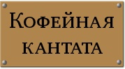

| Дата | Время | Название | Место проведения | ||
|---|---|---|---|---|---|
| 20 декабря 2011 г. | 19:00 |
Рождественский концерт От Генделя до наших дней в старинном стиле |
ДК МГУ | Карта | Афиша |
| 27 января 2012 г. | 19:00 |
Bella note Концертная программа: арии, романсы, песни русских и западноевропейских композиторов. Исполняют Павел Плавич (контртенор-сопрано) и Нина Солодовникова (сопрано) |
ДК МГУ | Карта | Афиша |
| 6 апреля 2012 г. | 19:00 |
Орфей в аду Опера-буфф Жака Оффенбаха |
ДК МГУ | Карта | Афиша |
|
В своих концертах Театр исполняет, в основном, духовную музыку. Но бывают и исключения... |
|
|
Юбилейное представление — избранные сцены из спектаклей. |
|
|  |
Маленькая шуточная опера И. С. Баха. |
| Мадригальная комедия Орацио Векки (1595) в духе комедии дель арте | |
| Музыкальная мистерия по кантате Карла Орфа "Кармина Бурана" (1936) и песням вагантов XIII века |